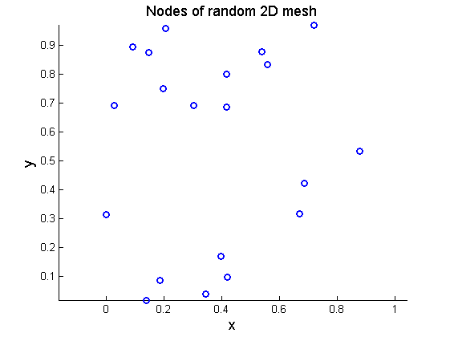
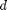
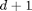
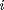
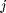
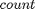
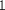
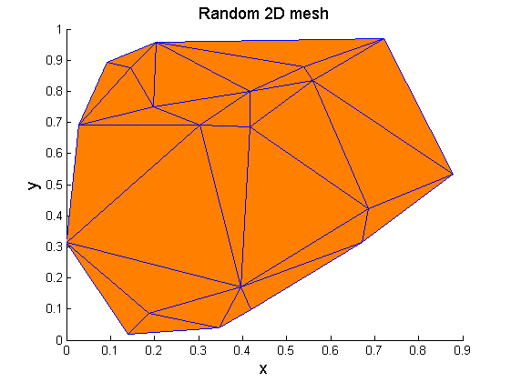

Mesh verification of a random 2-dimensional point set
Contents
Initial data
Set the random number generator.
rng(1);
Set the points defining the region to be meshed.
points=rand(20,2);
Plot the points defining the region to be meshed.
figure('Name','Nodes of random 2D mesh','NumberTitle','off') scatter(points(:,1),points(:,2),... 'marker','o','MarkerEdgeColor',[0 0 1],'LineWidth',2) xlabel('x','FontSize',13); ylabel('y','FontSize',13); title('Nodes of random 2D mesh','FontSize',13) axis equal
Processing
Find the Delaunay triangulation of the point set using the new convex hull algorithm.
T1=delaunay_nd(points);
Find the Delaunay triangulation of the point set using the algorithm provided by MATLAB.
T2=delaunayn(points);
Verification
Error check 1: mesh sizes
Find the number of elements of the mesh calculated using the new convex hull algorithm.
helements=size(T1,1);
Find the number of elements of the mesh calculated using the algorithm provided by MATLAB
celements=size(T2,1);
Check if the number of elements of the two meshes is the same. If this is not the case, throw an error.
if celements~=helements error('The number of elements does not match the true solution.'); end
Error check 2: duplicate elements
 is the dimension of the problem.
d=size(points,2);
Loop over all elements in pairs, such that each element pair contains two different elements. For each pair, the elements of which are defined by  points each, check if the two elements contain common points. If so, this means that the two elements are defined by the same points, therefore the two elements of the pair are identical. There must not be any duplicate elements, so if a pair is found having two identical elements, throw an error.
for i=1:helements for j=i+1:helements if nnz(ismember(T1(i,:),T1(j,:)))==d+1 error('Duplicate element.') end end end
Error check 3: true solution
For each element () of the mesh calculated by the new algorithm, loop over all elements () of the mesh calculated by the algorithm provided by MATLAB, and check if the points defining element and the points defining element are common. This must happen exactly one time, since the faces defining the two meshes are unique according to the above check 2, and their number is the same according to the above check 1, namely the  parameter can take the values or . If no th element identical to th element is encountered, then the parameter will remain , otherwise it will be set equal to . If the parameter remains equal to , throw an error.
for i=1:helements element1=T1(i,:); count=0; for j=1:celements element2=T2(j,:); if nnz(ismember(element1,element2))==d+1 count=1; end end if ~count error(['Element(' num2str(i) ') = [' num2str(element1) '] is not in the true solution.']) end end
Plots
Plot the mesh of the point set calculated with the new algorithm.
figure('Name','Random 2D mesh','NumberTitle','off') patch('Faces',T1,'Vertices',points,... 'FaceColor',[1 0.5 0],'EdgeColor',[0 0 1]); xlabel('x','FontSize',13); ylabel('y','FontSize',13); title('Random 2D mesh','FontSize',13)
Plot the mesh of the point set calculated with the algorithm provided by MATLAB.
figure('Name','Random 2D mesh','NumberTitle','off') patch('Faces',T2,'Vertices',points,... 'FaceColor',[1 0.5 0],'EdgeColor',[0 0 1]); xlabel('x','FontSize',13); ylabel('y','FontSize',13); title('Random 2D mesh','FontSize',13)
Contact author
(c) 2014 by George Papazafeiropoulos First Lieutenant, Infrastructure Engineer, Hellenic Air Force Civil Engineer, M.Sc., Ph.D. candidate, NTUA
Email: gpapazafeiropoulos@yahoo.gr
Website: http://users.ntua.gr/gpapazaf/